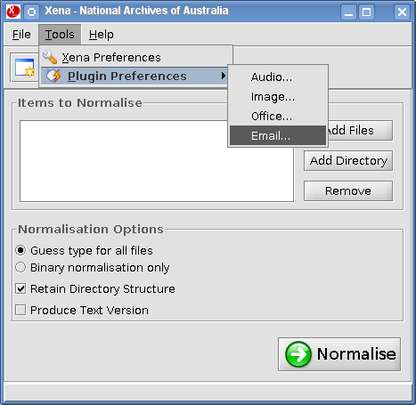
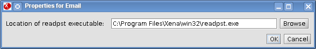

From the Xena menu, select Tools -> Plugin Preferences -> Email.

The external tool for converting Outlook PST files is included in the Xena package and will be located in a subdirectory at the same location as the Xena program (xena.jar).
For Windows the file is called readpst.exe and will be located in the subdirectory called winx86, while under Linux the file is simply readpst and sits under a subdirectory called lini386. The version for OSX will depend on your architecture - if using a PPC computer then the subdirectory will be macppc and if using an Intel computer will be macx86.
Click Browse and navigate to the location of program relevant to your computer, then click OK to save this setting.
